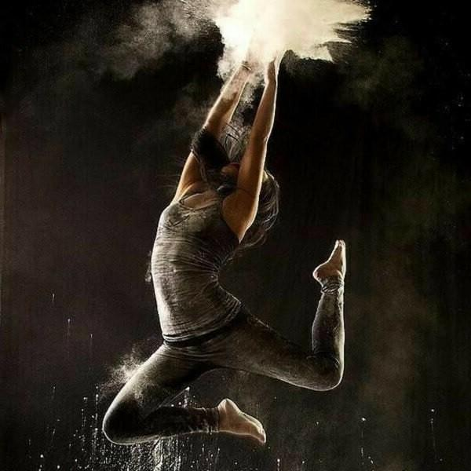

Другие виды искусства
Видами искусства называют формы художественного отражения реальности, которые сложились на протяжении истории и используют для выстраивания
образа определенные средства (звук, слово и т.п.).

Виды
- Литература - как главный инструмент использует слово. Роды и жанры ее разнообразны: драматические, лирические и эпические произведения воплощаются в формах комедии, трагедии и т.п.
- Живопись - оперирует цветом. Из ее жанров можно выделить пейзаж, натюрморт, портрет и др.
- Фотография - фиксирует изображения с помощью современного оборудования (оптического, цифрового и др.) Жанры аналогичны живописи.
- Музыка - выражается с помощью звука. Она делится на вокальную и инструментальную. В музыке есть множество разнообразных жанров: романс, соната, опера и т.п.
- Театр реализует определенное действие через игру актеров. Различают оперный, драматический театры и др.
Также существуют такие виды искусства, как цирк, архитектура, декоративно-прикладное, кино, скульптура, эстрада, графика, радиоискусство.
У каждого вида искусства есть свой жанр и стиль. Жанр - это тип художественного произведения, а стиль - это его отличительные признаки.